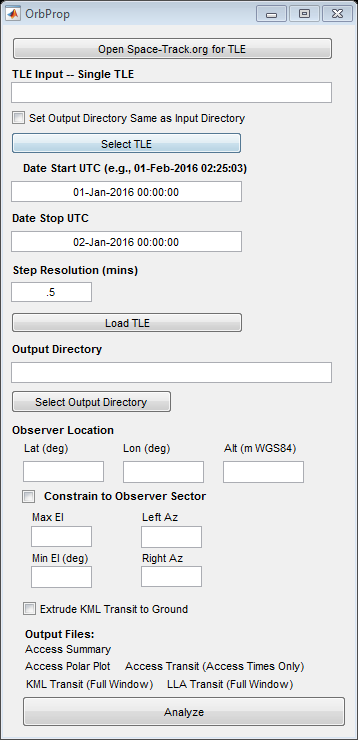

% Functions compiled and GUI developed by Damon P. DeLuca, USN CIV % Email: damondeluca@gmail.com % % NOTE: Output generated by this program has not been validated, other than % ensuring close agreement with AGI STK results. % % This script runs the SGP4 propagator using the manual method, afspc, with % WGS72 ellipsoid. SPG4 output in ManualOut.out is transformed from TEME % to ECEF using functions from David Vallado. The transformation teme2ecef % is executed for each line of output in ManualOutput.out. % % Input: See GUI. TLE input is a single two line file. % % Output: % Access_Summary.txt: Summary of visibility times from observers % location, with az/el/sr % % Access_Transit.txt: Used for plotting ground tracks for passes in % Access_Summary.txt. Only visibility periods are included. % line number, lat, lon, alt (m), el(deg), az(degT), timevector % % LLA_Transit.txt: Used for plotting ENTIRE ground track for period % specified in the GUI. % % PolarPlot.png: Az-El polar plot of passes in Access_Summary.txt % %SGP4 functions were % downloaded from www.celestrak.com during the week %of 18 JAN 2016. Credit below: % Author: % Jeff Beck % beckja@alumni.lehigh.edu % Version Info: % 1.0 (051019) - Initial version from Vallado C++ version. % 1.0 (aug 14, 2006) - update for paper % 2.0 (apr 2, 2007) - update for manual operations % 3.0 (3 jul, 2008) - update for opsmode operation afspc or improved % 3.1 (2 dec, 2008) - fix tsince/1440.0 in jd update function varargout = OrbProp(varargin) % ORBPROP MATLAB code for OrbProp.fig % ORBPROP, by itself, creates a new ORBPROP or raises the existing % singleton*. % % H = ORBPROP returns the handle to a new ORBPROP or the handle to % the existing singleton*. % % ORBPROP('CALLBACK',hObject,eventData,handles,...) calls the local % function named CALLBACK in ORBPROP.M with the given input arguments. % % ORBPROP('Property','Value',...) creates a new ORBPROP or raises the % existing singleton*. Starting from the left, property value pairs are % applied to the GUI before OrbProp_OpeningFcn gets called. An % unrecognized property name or invalid value makes property application % stop. All inputs are passed to OrbProp_OpeningFcn via varargin. % % *See GUI Options on GUIDE's Tools menu. Choose "GUI allows only one % instance to run (singleton)". % % See also: GUIDE, GUIDATA, GUIHANDLES % Edit the above text to modify the response to help OrbProp % Last Modified by GUIDE v2.5 01-Feb-2016 16:48:13 % Begin initialization code - DO NOT EDIT gui_Singleton = 1; gui_State = struct('gui_Name', mfilename, ... 'gui_Singleton', gui_Singleton, ... 'gui_OpeningFcn', @OrbProp_OpeningFcn, ... 'gui_OutputFcn', @OrbProp_OutputFcn, ... 'gui_LayoutFcn', [] , ... 'gui_Callback', []); if nargin && ischar(varargin{1}) gui_State.gui_Callback = str2func(varargin{1}); end if nargout [varargout{1:nargout}] = gui_mainfcn(gui_State, varargin{:}); else gui_mainfcn(gui_State, varargin{:}); end % End initialization code - DO NOT EDIT % --- Executes just before OrbProp is made visible. function OrbProp_OpeningFcn(hObject, eventdata, handles, varargin) % This function has no output args, see OutputFcn. % hObject handle to figure % eventdata reserved - to be defined in a future version of MATLAB % handles structure with handles and user data (see GUIDATA) % varargin command line arguments to OrbProp (see VARARGIN) % Choose default command line output for OrbProp handles.output = hObject; % Update handles structure guidata(hObject, handles); % UIWAIT makes OrbProp wait for user response (see UIRESUME) % uiwait(handles.figure1); % --- Outputs from this function are returned to the command line. function varargout = OrbProp_OutputFcn(hObject, eventdata, handles) % varargout cell array for returning output args (see VARARGOUT); % hObject handle to figure % eventdata reserved - to be defined in a future version of MATLAB % handles structure with handles and user data (see GUIDATA) % Get default command line output from handles structure varargout{1} = handles.output; % --- Executes on button press in run. function run_Callback(hObject, eventdata, handles) % hObject handle to run (see GCBO) % eventdata reserved - to be defined in a future version of MATLAB % handles structure with handles and user data (see GUIDATA) % script testmat.m % % This script tests the SGP4 propagator. % Author: % Jeff Beck % beckja@alumni.lehigh.edu % Version Info: % 1.0 (051019) - Initial version from Vallado C++ version. % 1.0 (aug 14, 2006) - update for paper % 2.0 (apr 2, 2007) - update for manual operations % 3.0 (3 jul, 2008) - update for opsmode operation afspc or improved % 3.1 (2 dec, 2008) - fix tsince/1440.0 in jd update % these are set in sgp4init global tumin mu radiusearthkm xke j2 j3 j4 j3oj2 infile outfile global opsmode satrec startmfe stopmfe deltamin tleloadflag % // ------------------------ implementation -------------------------- clear adum grob azob HorEl ElSR ElGR mess=msgbox('Please Wait...'); % add operation smode for afspc (a) or improved (i) % opsmode= input('input opsmode afspc a, improved i ','s'); opsmode= 'a'; % //typerun = 'c' compare 1 year of full satcat data % //typerun = 'v' verification run, requires modified elm file with % //typerun = 'm' maunual operation- either mfe, epoch, or dayof yr % // start stop and delta times % typerun = input('input type of run c, v, m: ','s'); if tleloadflag==0 errordlg('Select and Load TLE!'); return; end typerun = 'm'; if (typerun == 'm') % typeinput = input('input mfe, epoch (YMDHMS), or dayofyr approach, m,e,d:','s'); typeinput = 'e'; else typeinput = 'e'; end; % whichconst = input('input constants 721, 72, 84 '); % whichconst = input('input constants 721, 72, 84 '); whichconst = 72; rad = 180.0 / pi; outfile = fopen('ManualOutput.out', 'wt'); % // ---------------- setup files for operation ------------------ % // input 2-line element set file % infilename = input('input elset filename: ','s'); % infilename = 'JASON3_SGP4_test.tle'; global idebug dbgfile % // ----------------- test simple propagation ------------------- longstr1 = fgets(infile, 130); while ( (longstr1(1) == '#') && (feof(infile) == 0) ) longstr1 = fgets(infile, 130); end % longstr2 = fgets(infile, 130); % % if idebug % catno = strtrim(longstr1(3:7)); % dbgfile = fopen(strcat('sgp4test.dbg.',catno), 'wt'); % fprintf(dbgfile,'this is the debug output\n\n' ); % end % % // convert the char string to sgp4 elements % % // includes initialization of sgp4 % [satrec, startmfe, stopmfe, deltamin] = twoline2rv( whichconst, ... % longstr1, longstr2, typerun, typeinput); % % % fprintf(outfile, '%d xx\n', satrec.satnum); % % fprintf(1,' %d\n', satrec.satnum); % // call the propagator to get the initial state vector value [satrec, ro ,vo] = sgp4 (satrec, 0.0); % fprintf(outfile, ' %16.8f %16.8f %16.8f %16.8f %12.9f %12.9f %12.9f\n',... % satrec.t,ro(1),ro(2),ro(3),vo(1),vo(2),vo(3)); % fprintf(1, ' %16.8f %16.8f %16.8f %16.8f %12.9f %12.9f %12.9f\n',... % satrec.t,ro(1),ro(2),ro(3),vo(1),vo(2),vo(3)); tsince = startmfe; % // check so the first value isn't written twice if ( abs(tsince) > 1.0e-8 ) tsince = tsince - deltamin; end % // loop to perform the propagation while ((tsince < stopmfe) && (satrec.error == 0)) tsince = tsince + deltamin; if(tsince > stopmfe) tsince = stopmfe; end [satrec, ro, vo] = sgp4 (satrec, tsince); if (satrec.error > 0) fprintf(1,'# *** error: t:= %f *** code = %3i\n', tsince, satrec.error); end if (satrec.error == 0) if ((typerun ~= 'v') && (typerun ~= 'c')) jd = satrec.jdsatepoch + tsince/1440.0; [year,mon,day,hr,minute,sec] = invjday ( jd ); %Print the below for TEME state fprintf(outfile,... ' %16.8f %16.8f %16.8f %12.9f %12.9f %12.9f %5i%3i%3i %2i %2i %9.6f \n',... ro(1),ro(2),ro(3),vo(1),vo(2),vo(3),year,mon,day,hr,minute,sec ); [p,a,ecc,incl,node,argp,nu,m,arglat,truelon,lonper ] = rv2coe (ro,vo,mu); %Print the below for keplar elements % fprintf(outfile, ' %14.6f %8.6f %10.5f %10.5f %10.5f %10.5f %10.5f %10.5f %10.5f %5i%3i%3i %2i:%2i:%9.6f \n',... % p, ecc, incl, node, argp, nu, arglat, truelon, lonper,year,mon,day,hr,minute,sec ); else jd = satrec.jdsatepoch + tsince/1440.0; [year,mon,day,hr,minute,sec] = invjday ( jd ); fprintf(outfile, ' %16.8f %16.8f %16.8f %16.8f %12.9f %12.9f %12.9f',... tsince,ro(1),ro(2),ro(3),vo(1),vo(2),vo(3)); % fprintf(1, ' %16.8f %16.8f %16.8f %16.8f %12.9f %12.9f %12.9f \n',... % tsince,ro(1),ro(2),ro(3),vo(1),vo(2),vo(3)); [p,a,ecc,incl,node,argp,nu,m,arglat,truelon,lonper ] = rv2coe (ro,vo,mu); fprintf(outfile, ' %14.6f %8.6f %10.5f %10.5f %10.5f %10.5f %10.5f %5i%3i%3i %2i:%2i:%9.6f \n',... a, ecc, incl*rad, node*rad, argp*rad, nu*rad, m*rad,year,mon,day,hr,minute,sec ); end end %// if satrec.error == 0 end %// while propagating the orbit if (idebug && (dbgfile ~= -1)) fclose(dbgfile); end fclose(infile); fclose(outfile); %%%%Damon's code to calculate LLA dat=importdata('ManualOutput.out'); datsiz=size(dat); fileID=fopen('ManualOutput.out'); data = textscan(fileID, '%f %f %f %f %f %f %f %f %f %f %f %f %*[^\n]'); % data = textscan(fileID, '%f %f %f %f %f %f %f %f %f %*[^\n]'); %Open file for writing LLA outd=get(handles.outdiredit,'string'); outd2=strcat(outd,'/LLA_Transit.txt'); LLAoutfile = fopen(outd2, 'wt'); %Get vars for teme2ecef convrt = pi / (3600.0*180.0); %arc sec to rad convrtm= (0.001*pi) /(180.0*3600.0); xp=.0075*convrt; yp=.2925*convrt; %xp and yp from Naval observatory, 1/26/2016 lod=0; %Excess length of day dut1=0; dat=0; timezone=0; %Use below for TEME elements for i=1:datsiz(1) % [r(i,:) v(i,:)]=orb2rv(data{1,1}(i),data{1,2}(i),data{1,3}(i),data{1,4}(i),data{1,5}(i),... % data{1,6}(i),data{1,7}(i),data{1,8}(i),data{1,9}(i)); r(i,:)=[data{1,1}(i),data{1,2}(i),data{1,3}(i)]; v(i,:)=[data{1,4}(i),data{1,5}(i),data{1,6}(i)]; a(i,1:3)=[0, 0, 0]; %Get time of the TEME line being processed year=data{1,7}(i); mon=data{1,8}(i); day=data{1,9}(i); hr=data{1,10}(i); min=data{1,11}(i); sec=data{1,12}(i); %Calc time vars for time of TEME line [ut1, tut1, jdut1, utc, tai, tt, ttt, jdtt, tdb, ttdb, jdtdb, tcg, jdtcg, tcb, jdtcb ] ... = convtime ( year, mon, day, hr, min, sec, timezone, dut1, dat ); %Calc ECEF coordinate for TEME line using correct time [recef(i,:),vecef(i,:),aecef(i,:)] = teme2ecef ( r(i,:)',v(i,:)',a(i,:)',ttt,jdut1,lod,xp,yp ); recef(i,:)=recef(i,:).*1000; R(i,1)=i; R(i,2:4)=recef(i,:); LLA(i,1:4)= ecefm2LLA(R(i,1:4)); timform=datestr([data{1,7}(i),data{1,8}(i),data{1,9}(i),data{1,10}(i),data{1,11}(i),data{1,12}(i)]); fprintf(LLAoutfile, '%5i %8.4f %8.4f %10.3f \t %5i %3i %3i %2i %2i %9.6f \n',... LLA(i,1),LLA(i,2),LLA(i,3),LLA(i,4),data{1,7}(i),data{1,8}(i),data{1,9}(i),data{1,10}(i),data{1,11}(i),data{1,12}(i)); end fclose(LLAoutfile); %Write ground track to KML file KMLplot(LLA); % % Calculations to determine visibility to TLE wgs84=[6378.137 0.081819190842622]; wgs8443=[8504.182667 0.081819190842622]; %Used for radar horizon (4/3r earth) vlat=str2double(get(handles.oblat,'string')); %viewer lat vlon=str2double(get(handles.oblon,'string')); %viewer lon valt=str2double(get(handles.obalt,'string')); %viewer alt m geodetic if isempty(vlat)||isempty(vlon)||isempty(valt) errordlg('Set Observer Location'); return; end %Calculate elevation and sr of object rngvec=ones(1,datsiz(1)); vlatvec=vlat*rngvec; vlonvec=vlon*rngvec; valtvec=valt/1000*rngvec; [eob,srob,adum]=elevation(vlatvec',vlonvec',valtvec',LLA(:,2),LLA(:,3),LLA(:,4)./1000,'degrees',wgs84); [grob,azob]=distance(vlatvec',vlonvec',LLA(:,2),LLA(:,3),wgs84,'degrees'); %Calculate el of horizon from observer [HorEl, ElSR, ElGR] = GeoHorizonEl (vlat,vlon,valt); %valt in m, SR and GR in km % %Find lines where over the horizon % othnums=find(eob>HorEl); % othnumssiz=size(othnums); %Get sector constraints if get(handles.sectcb,'value')==1 maxE=str2double(get(handles.maxeledit,'string')); minE=str2double(get(handles.mineledit,'string')); laz=str2double(get(handles.lazedit,'string')); raz=str2double(get(handles.razedit,'string')); if isempty(maxE)||isempty(minE)||isempty(laz)||isempty(raz) errordlg('Set sector constraints!'); return; end othnums1=find(eob>=minE); othnums2=othnums1(find(eob(othnums1)<=maxE)); if raz<laz aztmp=360+raz; azobtempnumschange=find(azob<=raz); azobtempnums=find(azob>raz); azobtemp(azobtempnums)=azob(azobtempnums); azobtemp(azobtempnumschange)=azob(azobtempnumschange)+360; othnums3=othnums2(find(azobtemp(othnums2)<=raz+360)); othnums=othnums3(find(azobtemp(othnums3)>=laz)); othnumssiz=size(othnums); else othnums3=othnums2(find(azob(othnums2)>=laz)); othnums=othnums3(find(azob(othnums3)<=raz)); othnumssiz=size(othnums); end else %write all points above horizon %Find lines where over the horizon othnums=find(eob>HorEl); othnumssiz=size(othnums); end tm=clock; tmf=datestr(clock); %Open two files for writing outd=get(handles.outdiredit,'string'); outd2=strcat(outd,'/Access_Transit.txt'); acctrak = fopen(outd2, 'wt'); outd=get(handles.outdiredit,'string'); outd2=strcat(outd,'/Access_Summary.txt'); othfile = fopen(outd2, 'wt'); % % fprintf(othfile, 'Satellite Access File Created %5i/%2i/%2i %2i:%2i \n',... % tm(1),tm(2),tm(3),tm(4),tm(5)); fprintf(othfile, 'Satellite GEO LOS Access File Created: %20s \n',... tmf); fprintf(othfile, 'Satellite ID: %5i \n \n', satrec.satnum); fprintf(othfile, 'Viewer location: %6.4f Lat, %8.4f Lon, %6.1f m geodetic \n \n',vlat,vlon,valt); if get(handles.sectcb,'value')==1 fprintf(othfile, 'Sector Max El (degs): %3.1f \n', maxE); fprintf(othfile, 'Sector Min El (degs): %3.1f \n', minE); fprintf(othfile, 'Sector Left (degsT): %3.1f \n', laz); fprintf(othfile, 'Sector Right (degsT): %3.1f \n \n', raz); end fprintf(othfile, 'All times UTC'); fprintf(othfile, '\n'); fprintf(othfile, '\n'); fprintf(othfile, '----------------- Pass Summary -- GEO LOS ------------------\n'); %Find out access periods and write to accesstimes file cnt=1; flag=0; for k=1:othnumssiz(1) % if eob(othnums(k))>=minE && eob(othnums(k))<=maxE % % if azob(othnums(k))>=laz && azob(othnums(k))<=raz if k>1 if othnums(k)~=(othnums(k-1)+1) k2=k-1; %will be used to find max el in window maxEwin=max(eob(othnums(k1):othnums(k2))); t2=0; datetemp=datestr([data{1,7}(othnums(k-1)),data{1,8}(othnums(k-1)),... data{1,9}(othnums(k-1)),data{1,10}(othnums(k-1)),data{1,11}(othnums(k-1)),data{1,12}(othnums(k-1))]); fprintf(othfile, '\t %20s \n',datetemp); t2=datevec(datetemp); elaptime=etime(t2,t1)/60; fprintf(othfile, '\t Access duration is %6.2f minutes \n',elaptime); fprintf(othfile, '\t Max elevation is is %3.1f degs \n',maxEwin); clear elaptime; cnt=cnt+1; flag=0; end end if k==othnumssiz(1) if flag==1 k2=k; maxEwin=max(eob(othnums(k1):othnums(k2))); datetemp=datestr([data{1,7}(othnums(k)),data{1,8}(othnums(k)),... data{1,9}(othnums(k)),data{1,10}(othnums(k)),data{1,11}(othnums(k)),data{1,12}(othnums(k))]); fprintf(othfile, '\t %20s \n',datetemp); t2=datevec(datetemp); elaptime=etime(t2,t1)/60; fprintf(othfile, '\t Access duration is %6.2f minutes \n',elaptime); fprintf(othfile, '\t Max elevation is %3.1f degs \n',maxEwin); clear elaptime; end end if flag==0 k1=k; t1=0; datetemp=datestr([data{1,7}(othnums(k)),data{1,8}(othnums(k)),data{1,9}(othnums(k)),... data{1,10}(othnums(k)),data{1,11}(othnums(k)),data{1,12}(othnums(k))]); t1=datevec(datetemp); flag=1; fprintf(othfile, 'Access %2i \n',cnt); fprintf(othfile, '\t %20s \n',datetemp); end % end % end end fprintf(othfile, '\n'); fprintf(othfile, '----------- Elevation, Slant Range, Azimuth Summary --------\n'); fprintf(othfile, '\n'); fprintf(othfile, ' DATE El(deg) Slant R(km) Az(degT) \n'); fprintf(othfile, '--------------------------------------------------------------\n'); %Write date, elevation, sr, and az to access file cnt=1; flag=0; for k=1:othnumssiz(1) if k>1 if othnums(k)~=(othnums(k-1)+1) fprintf(othfile, '\n'); fprintf(acctrak, 'nan nan nan nan \n'); %put in nans so each line plottedis separate f2=0; cnt=cnt+1; flag=0; end end if flag==0 fprintf(othfile, 'Access %2i \n',cnt); flag=1; end %Write el sr and az to summary datef=datestr([data{1,7}(othnums(k)),data{1,8}(othnums(k)),... data{1,9}(othnums(k)),data{1,10}(othnums(k)),data{1,11}(othnums(k)),data{1,12}(othnums(k))]); fprintf(othfile, '%20s \t %4.2f \t %8.2f \t %6.3f \n',... datef,eob(othnums(k)),srob(othnums(k)),azob(othnums(k))); %Write to access track file fprintf(acctrak, '%5i %8.4f %8.4f %10.3f %4.2f %6.3f \t %5i %3i %3i %2i %2i %9.6f \n',... k,LLA(othnums(k),2),LLA(othnums(k),3),LLA(othnums(k),4),... eob(othnums(k)),azob(othnums(k)),data{1,7}(k),data{1,8}(k),data{1,9}(k),data{1,10}(k),data{1,11}(k),data{1,12}(k)); end fclose(othfile); fclose(acctrak); %Polar plot figure(1); outd=get(handles.outdiredit,'string'); outd2=strcat(outd,'/Access_Transit.txt'); accesstransit=importdata(outd2); polar(accesstransit(:,6).*3.14159/180,90-accesstransit(:,5),'r'); title('Az-El Polar Plot','Fontsize',14); outd=get(handles.outdiredit,'string'); pngfilename = 'PolarPlot.png'; saveas(gcf,strcat(outd,'/',pngfilename)); close(mess); % % --- Executes during object creation, after setting all properties. function run_CreateFcn(hObject, eventdata, handles) % hObject handle to run (see GCBO) % eventdata reserved - to be defined in a future version of MATLAB % handles empty - handles not created until after all CreateFcns called function tleedit_Callback(hObject, eventdata, handles) % hObject handle to tleedit (see GCBO) % eventdata reserved - to be defined in a future version of MATLAB % handles structure with handles and user data (see GUIDATA) % Hints: get(hObject,'String') returns contents of tleedit as text % str2double(get(hObject,'String')) returns contents of tleedit as a double % --- Executes during object creation, after setting all properties. function tleedit_CreateFcn(hObject, eventdata, handles) % hObject handle to tleedit (see GCBO) % eventdata reserved - to be defined in a future version of MATLAB % handles empty - handles not created until after all CreateFcns called % Hint: edit controls usually have a white background on Windows. % See ISPC and COMPUTER. if ispc && isequal(get(hObject,'BackgroundColor'), get(0,'defaultUicontrolBackgroundColor')) set(hObject,'BackgroundColor','white'); end % --- Executes on button press in selectloadtle. function selectloadtle_Callback(hObject, eventdata, handles) % hObject handle to selectloadtle (see GCBO) % eventdata reserved - to be defined in a future version of MATLAB % handles structure with handles and user data (see GUIDATA) global defaultbrowse defb=defaultbrowse; [filename, pathname] = ... uigetfile({'*.tle';'*.txt'},'Choose file...',defb); fname=strcat(pathname,filename); if isempty(pathname)||isempty(filename) errordlg('Select TLE input file, .txt or .tle'); return; end set(handles.tleedit,'string',fname); a=get(handles.samedircb,'value'); if a==1 set(handles.outdiredit,'string',pathname); end % --- Executes during object creation, after setting all properties. function selectloadtle_CreateFcn(hObject, eventdata, handles) % hObject handle to selectloadtle (see GCBO) % eventdata reserved - to be defined in a future version of MATLAB % handles empty - handles not created until after all CreateFcns called function startedit_Callback(hObject, eventdata, handles) % hObject handle to startedit (see GCBO) % eventdata reserved - to be defined in a future version of MATLAB % handles structure with handles and user data (see GUIDATA) % Hints: get(hObject,'String') returns contents of startedit as text % str2double(get(hObject,'String')) returns contents of startedit as a double % --- Executes during object creation, after setting all properties. function startedit_CreateFcn(hObject, eventdata, handles) % hObject handle to startedit (see GCBO) % eventdata reserved - to be defined in a future version of MATLAB % handles empty - handles not created until after all CreateFcns called % Hint: edit controls usually have a white background on Windows. % See ISPC and COMPUTER. if ispc && isequal(get(hObject,'BackgroundColor'), get(0,'defaultUicontrolBackgroundColor')) set(hObject,'BackgroundColor','white'); end function stopedit_Callback(hObject, eventdata, handles) % hObject handle to stopedit (see GCBO) % eventdata reserved - to be defined in a future version of MATLAB % handles structure with handles and user data (see GUIDATA) % Hints: get(hObject,'String') returns contents of stopedit as text % str2double(get(hObject,'String')) returns contents of stopedit as a double % --- Executes during object creation, after setting all properties. function stopedit_CreateFcn(hObject, eventdata, handles) % hObject handle to stopedit (see GCBO) % eventdata reserved - to be defined in a future version of MATLAB % handles empty - handles not created until after all CreateFcns called % Hint: edit controls usually have a white background on Windows. % See ISPC and COMPUTER. if ispc && isequal(get(hObject,'BackgroundColor'), get(0,'defaultUicontrolBackgroundColor')) set(hObject,'BackgroundColor','white'); end % --- Executes on button press in samedircb. function samedircb_Callback(hObject, eventdata, handles) % hObject handle to samedircb (see GCBO) % eventdata reserved - to be defined in a future version of MATLAB % handles structure with handles and user data (see GUIDATA) % Hint: get(hObject,'Value') returns toggle state of samedircb % --- Executes during object creation, after setting all properties. function samedircb_CreateFcn(hObject, eventdata, handles) % hObject handle to samedircb (see GCBO) % eventdata reserved - to be defined in a future version of MATLAB % handles empty - handles not created until after all CreateFcns called function outdiredit_Callback(hObject, eventdata, handles) % hObject handle to outdiredit (see GCBO) % eventdata reserved - to be defined in a future version of MATLAB % handles structure with handles and user data (see GUIDATA) % Hints: get(hObject,'String') returns contents of outdiredit as text % str2double(get(hObject,'String')) returns contents of outdiredit as a double % --- Executes during object creation, after setting all properties. function outdiredit_CreateFcn(hObject, eventdata, handles) % hObject handle to outdiredit (see GCBO) % eventdata reserved - to be defined in a future version of MATLAB % handles empty - handles not created until after all CreateFcns called % Hint: edit controls usually have a white background on Windows. % See ISPC and COMPUTER. if ispc && isequal(get(hObject,'BackgroundColor'), get(0,'defaultUicontrolBackgroundColor')) set(hObject,'BackgroundColor','white'); end % --- Executes on button press in selectout. function selectout_Callback(hObject, eventdata, handles) % hObject handle to selectout (see GCBO) % eventdata reserved - to be defined in a future version of MATLAB % handles structure with handles and user data (see GUIDATA) global defaultbrowse defb=defaultbrowse; [pathname] = uigetdir(defb); if pathname == 0 return; end set(handles.outdiredit,'string',pathname); % --- Executes during object creation, after setting all properties. function selectout_CreateFcn(hObject, eventdata, handles) % hObject handle to selectout (see GCBO) % eventdata reserved - to be defined in a future version of MATLAB % handles empty - handles not created until after all CreateFcns called % --- Executes on button press in loadtle. function loadtle_Callback(hObject, eventdata, handles) % hObject handle to loadtle (see GCBO) % eventdata reserved - to be defined in a future version of MATLAB % handles structure with handles and user data (see GUIDATA) global infile outfile idebug dbgfile satrec startmfe stopmfe deltamin tleloadflag inpath=get(handles.tleedit,'string'); if isempty(inpath) errordlg('Select TLE input file, .txt or .tle'); return; end infilename = inpath; infile = fopen(infilename, 'r'); if (infile == -1) fprintf(1,'Failed to open file: %s\n', infilename); return; end % outfile = fopen('ManualOutput.out', 'wt'); whichconst = 72; rad = 180.0 / pi; opsmode= 'a'; typerun = 'm'; if (typerun == 'm') % typeinput = input('input mfe, epoch (YMDHMS), or dayofyr approach, m,e,d:','s'); typeinput = 'e'; else typeinput = 'e'; end; longstr1 = fgets(infile, 130); while ( (longstr1(1) == '#') && (feof(infile) == 0) ) longstr1 = fgets(infile, 130); end if (feof(infile) == 0) longstr2 = fgets(infile, 130); if idebug catno = strtrim(longstr1(3:7)); dbgfile = fopen(strcat('sgp4test.dbg.',catno), 'wt'); fprintf(dbgfile,'this is the debug output\n\n' ); end % // convert the char string to sgp4 elements % // includes initialization of sgp4 [satrec, startmfe, stopmfe, deltamin] = twoline2rv( whichconst, ... longstr1, longstr2, typerun, typeinput); end tleloadflag=1; % --- Executes during object creation, after setting all properties. function loadtle_CreateFcn(hObject, eventdata, handles) % hObject handle to loadtle (see GCBO) % eventdata reserved - to be defined in a future version of MATLAB % handles empty - handles not created until after all CreateFcns called function steptedit_Callback(hObject, eventdata, handles) % hObject handle to steptedit (see GCBO) % eventdata reserved - to be defined in a future version of MATLAB % handles structure with handles and user data (see GUIDATA) % Hints: get(hObject,'String') returns contents of steptedit as text % str2double(get(hObject,'String')) returns contents of steptedit as a double % --- Executes during object creation, after setting all properties. function steptedit_CreateFcn(hObject, eventdata, handles) % hObject handle to steptedit (see GCBO) % eventdata reserved - to be defined in a future version of MATLAB % handles empty - handles not created until after all CreateFcns called % Hint: edit controls usually have a white background on Windows. % See ISPC and COMPUTER. if ispc && isequal(get(hObject,'BackgroundColor'), get(0,'defaultUicontrolBackgroundColor')) set(hObject,'BackgroundColor','white'); end function oblat_Callback(hObject, eventdata, handles) % hObject handle to oblat (see GCBO) % eventdata reserved - to be defined in a future version of MATLAB % handles structure with handles and user data (see GUIDATA) % Hints: get(hObject,'String') returns contents of oblat as text % str2double(get(hObject,'String')) returns contents of oblat as a double % --- Executes during object creation, after setting all properties. function oblat_CreateFcn(hObject, eventdata, handles) % hObject handle to oblat (see GCBO) % eventdata reserved - to be defined in a future version of MATLAB % handles empty - handles not created until after all CreateFcns called % Hint: edit controls usually have a white background on Windows. % See ISPC and COMPUTER. if ispc && isequal(get(hObject,'BackgroundColor'), get(0,'defaultUicontrolBackgroundColor')) set(hObject,'BackgroundColor','white'); end function oblon_Callback(hObject, eventdata, handles) % hObject handle to oblon (see GCBO) % eventdata reserved - to be defined in a future version of MATLAB % handles structure with handles and user data (see GUIDATA) % Hints: get(hObject,'String') returns contents of oblon as text % str2double(get(hObject,'String')) returns contents of oblon as a double % --- Executes during object creation, after setting all properties. function oblon_CreateFcn(hObject, eventdata, handles) % hObject handle to oblon (see GCBO) % eventdata reserved - to be defined in a future version of MATLAB % handles empty - handles not created until after all CreateFcns called % Hint: edit controls usually have a white background on Windows. % See ISPC and COMPUTER. if ispc && isequal(get(hObject,'BackgroundColor'), get(0,'defaultUicontrolBackgroundColor')) set(hObject,'BackgroundColor','white'); end function obalt_Callback(hObject, eventdata, handles) % hObject handle to obalt (see GCBO) % eventdata reserved - to be defined in a future version of MATLAB % handles structure with handles and user data (see GUIDATA) % Hints: get(hObject,'String') returns contents of obalt as text % str2double(get(hObject,'String')) returns contents of obalt as a double % --- Executes during object creation, after setting all properties. function obalt_CreateFcn(hObject, eventdata, handles) % hObject handle to obalt (see GCBO) % eventdata reserved - to be defined in a future version of MATLAB % handles empty - handles not created until after all CreateFcns called % Hint: edit controls usually have a white background on Windows. % See ISPC and COMPUTER. if ispc && isequal(get(hObject,'BackgroundColor'), get(0,'defaultUicontrolBackgroundColor')) set(hObject,'BackgroundColor','white'); end % --- Executes on button press in atcb. function atcb_Callback(hObject, eventdata, handles) % hObject handle to atcb (see GCBO) % eventdata reserved - to be defined in a future version of MATLAB % handles structure with handles and user data (see GUIDATA) % Hint: get(hObject,'Value') returns toggle state of atcb % --- Executes during object creation, after setting all properties. function atcb_CreateFcn(hObject, eventdata, handles) % hObject handle to atcb (see GCBO) % eventdata reserved - to be defined in a future version of MATLAB % handles empty - handles not created until after all CreateFcns called % --- Executes on button press in llacb. function llacb_Callback(hObject, eventdata, handles) % hObject handle to llacb (see GCBO) % eventdata reserved - to be defined in a future version of MATLAB % handles structure with handles and user data (see GUIDATA) % Hint: get(hObject,'Value') returns toggle state of llacb % --- Executes during object creation, after setting all properties. function llacb_CreateFcn(hObject, eventdata, handles) % hObject handle to llacb (see GCBO) % eventdata reserved - to be defined in a future version of MATLAB % handles empty - handles not created until after all CreateFcns called % --- Executes on button press in acctrancb. function acctrancb_Callback(hObject, eventdata, handles) % hObject handle to acctrancb (see GCBO) % eventdata reserved - to be defined in a future version of MATLAB % handles structure with handles and user data (see GUIDATA) % Hint: get(hObject,'Value') returns toggle state of acctrancb % --- Executes during object creation, after setting all properties. function acctrancb_CreateFcn(hObject, eventdata, handles) % hObject handle to acctrancb (see GCBO) % eventdata reserved - to be defined in a future version of MATLAB % handles empty - handles not created until after all CreateFcns called % --- Executes on button press in polarcb. function polarcb_Callback(hObject, eventdata, handles) % hObject handle to polarcb (see GCBO) % eventdata reserved - to be defined in a future version of MATLAB % handles structure with handles and user data (see GUIDATA) % Hint: get(hObject,'Value') returns toggle state of polarcb % --- Executes during object creation, after setting all properties. function polarcb_CreateFcn(hObject, eventdata, handles) % hObject handle to polarcb (see GCBO) % eventdata reserved - to be defined in a future version of MATLAB % handles empty - handles not created until after all CreateFcns called % --- Executes on button press in sectcb. function sectcb_Callback(hObject, eventdata, handles) % hObject handle to sectcb (see GCBO) % eventdata reserved - to be defined in a future version of MATLAB % handles structure with handles and user data (see GUIDATA) % Hint: get(hObject,'Value') returns toggle state of sectcb % --- Executes during object creation, after setting all properties. function sectcb_CreateFcn(hObject, eventdata, handles) % hObject handle to sectcb (see GCBO) % eventdata reserved - to be defined in a future version of MATLAB % handles empty - handles not created until after all CreateFcns called function maxeledit_Callback(hObject, eventdata, handles) % hObject handle to maxeledit (see GCBO) % eventdata reserved - to be defined in a future version of MATLAB % handles structure with handles and user data (see GUIDATA) % Hints: get(hObject,'String') returns contents of maxeledit as text % str2double(get(hObject,'String')) returns contents of maxeledit as a double % --- Executes during object creation, after setting all properties. function maxeledit_CreateFcn(hObject, eventdata, handles) % hObject handle to maxeledit (see GCBO) % eventdata reserved - to be defined in a future version of MATLAB % handles empty - handles not created until after all CreateFcns called % Hint: edit controls usually have a white background on Windows. % See ISPC and COMPUTER. if ispc && isequal(get(hObject,'BackgroundColor'), get(0,'defaultUicontrolBackgroundColor')) set(hObject,'BackgroundColor','white'); end function mineledit_Callback(hObject, eventdata, handles) % hObject handle to mineledit (see GCBO) % eventdata reserved - to be defined in a future version of MATLAB % handles structure with handles and user data (see GUIDATA) % Hints: get(hObject,'String') returns contents of mineledit as text % str2double(get(hObject,'String')) returns contents of mineledit as a double % --- Executes during object creation, after setting all properties. function mineledit_CreateFcn(hObject, eventdata, handles) % hObject handle to mineledit (see GCBO) % eventdata reserved - to be defined in a future version of MATLAB % handles empty - handles not created until after all CreateFcns called % Hint: edit controls usually have a white background on Windows. % See ISPC and COMPUTER. if ispc && isequal(get(hObject,'BackgroundColor'), get(0,'defaultUicontrolBackgroundColor')) set(hObject,'BackgroundColor','white'); end function lazedit_Callback(hObject, eventdata, handles) % hObject handle to lazedit (see GCBO) % eventdata reserved - to be defined in a future version of MATLAB % handles structure with handles and user data (see GUIDATA) % Hints: get(hObject,'String') returns contents of lazedit as text % str2double(get(hObject,'String')) returns contents of lazedit as a double % --- Executes during object creation, after setting all properties. function lazedit_CreateFcn(hObject, eventdata, handles) % hObject handle to lazedit (see GCBO) % eventdata reserved - to be defined in a future version of MATLAB % handles empty - handles not created until after all CreateFcns called % Hint: edit controls usually have a white background on Windows. % See ISPC and COMPUTER. if ispc && isequal(get(hObject,'BackgroundColor'), get(0,'defaultUicontrolBackgroundColor')) set(hObject,'BackgroundColor','white'); end function razedit_Callback(hObject, eventdata, handles) % hObject handle to razedit (see GCBO) % eventdata reserved - to be defined in a future version of MATLAB % handles structure with handles and user data (see GUIDATA) % Hints: get(hObject,'String') returns contents of razedit as text % str2double(get(hObject,'String')) returns contents of razedit as a double % --- Executes during object creation, after setting all properties. function razedit_CreateFcn(hObject, eventdata, handles) % hObject handle to razedit (see GCBO) % eventdata reserved - to be defined in a future version of MATLAB % handles empty - handles not created until after all CreateFcns called % Hint: edit controls usually have a white background on Windows. % See ISPC and COMPUTER. if ispc && isequal(get(hObject,'BackgroundColor'), get(0,'defaultUicontrolBackgroundColor')) set(hObject,'BackgroundColor','white'); end % --- Executes on button press in stbutt. function stbutt_Callback(hObject, eventdata, handles) % hObject handle to stbutt (see GCBO) % eventdata reserved - to be defined in a future version of MATLAB % handles structure with handles and user data (see GUIDATA) web https://www.space-track.org -browser % --- Executes during object creation, after setting all properties. function stbutt_CreateFcn(hObject, eventdata, handles) % hObject handle to stbutt (see GCBO) % eventdata reserved - to be defined in a future version of MATLAB % handles empty - handles not created until after all CreateFcns called % --- Executes on button press in kmlext. function kmlext_Callback(hObject, eventdata, handles) % hObject handle to kmlext (see GCBO) % eventdata reserved - to be defined in a future version of MATLAB % handles structure with handles and user data (see GUIDATA) % Hint: get(hObject,'Value') returns toggle state of kmlext % --- Executes during object creation, after setting all properties. function kmlext_CreateFcn(hObject, eventdata, handles) % hObject handle to kmlext (see GCBO) % eventdata reserved - to be defined in a future version of MATLAB % handles empty - handles not created until after all CreateFcns called